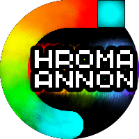
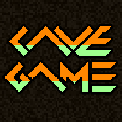

Below is a compilation of the games that I have delevoped or was a part of. Most are quite fun or at the very least entertaining.

The Chroma Cannon Anthology, as I like to call it, is a programming exercise where I program the same game into as many different mediums as possible. Chroma Cannon is basic in design; you the player move around the field of play in an endurance test to survive as long as possible. Each of the games supported platforms and version have slightly different mechanics to take advantage of the technology that was available to me.
Play Chroma Cannon I on your PC! [mirror]
Play Chroma Cannon II on Android!

Cave Game was a fun game to build. Cave Game was the first scrollable 2D game I've made, as well as the first game where I experiemented with random level generation. The player's goal is to collect a specified amount of fuel for their mining drill that is randomly scattered about the world. Platforms are generated in chunks on the fly when they are nearby offscreen. Each chunk remains in memory, so platform locations remain constant during the player's run.
Kart Racing Game was my first team project. Under the team name "Triple Jump", five of us spent five weeks planning and developing a racing game. The game plays as a standard racing game with 2-Player and Time Trial Modes. As the main programmer in the team, I wrote the mechanics that drove the AI, the scripts that ensure you traversed the entire track length, cut scene code, multiplayer code, and more. The project itself looks a little rough around the edges, but the games backbone is fully functional and could potentially be used in the future.